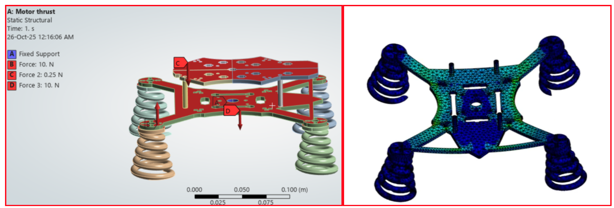

← Back to projects

Custom Quadcopter Using Teensy 4.1 and MPU6050
A fully custom quadcopter developed from mechanical design through embedded flight control, constrained testing, PID tuning, structural refinement, and successful free flight.
System Overview
The vehicle uses a Teensy 4.1 as the flight controller, an MPU6050 inertial sensor, custom attitude-estimation and cascaded PID control code, and a lightweight X-frame. The project progressed through 3D-printed prototypes, a constrained test rig, vibration diagnosis, carbon-fiber redesign, ANSYS validation, motor-output tuning, and flight testing.
Mechanical Design and Structural Validation
The first prototype was used to validate geometry and assembly. After vibration and stiffness issues were identified, the frame was redesigned using carbon-fiber plates and checked through structural and aerodynamic analysis.
- Designed the X-frame layout and 3D-printed integration parts.
- Evaluated stress and deformation using ANSYS.
- Compared design iterations before moving to the final carbon-fiber structure.
- Developed and assembled a constrained test rig for safe controller tuning.

Flight-Control Development and Tuning
The controller was implemented directly on the Teensy 4.1. Development included MPU6050 calibration, attitude estimation, nested angle-and-rate control, motor mixing, receiver input, telemetry, failsafe logic, and iterative PID tuning.
- Implemented custom cascaded PID control for roll, pitch, and yaw.
- Diagnosed noisy IMU measurements and vibration-induced instability.
- Created a telemetry GUI to inspect angles, commands, and motor outputs.
- Repeated constrained and free-flight tests until stable flight was achieved.